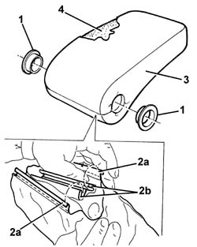

7045B22 Front seat armrest' TRIM - R.R. with armrest removed
- Path
- Procedures > 70 FITTINGS > 7045 FRONT SEATS > 7045B front seat head restraint/arm rest > 7045B22 Front seat armrest' TRIM - R.R. with armrest removed
- Kind
- repair procedure (removal / refitting; the operation number is the code)
- Applies to
- all engines; all production periods
- Interactive page
- https://sloeber94.github.io/elrnDB-a156/en/#/3238898
Applies to: all engines; all production periods
 Removing
Removing
 Refitting
Refitting1. Remove the bushes.
2. Remove the edges (2a) of the retaining grooves (2b).
3. Remove the trim.
4. Recover the unwoven cloth.

Applies to: all engines; all production periods
Refitting
RemovingCheck that the trim is undamaged.
Position the unwoven cloth and fit the covering on the upholstery, then fit the edges in the retaining grooves.
Fit the bushes.